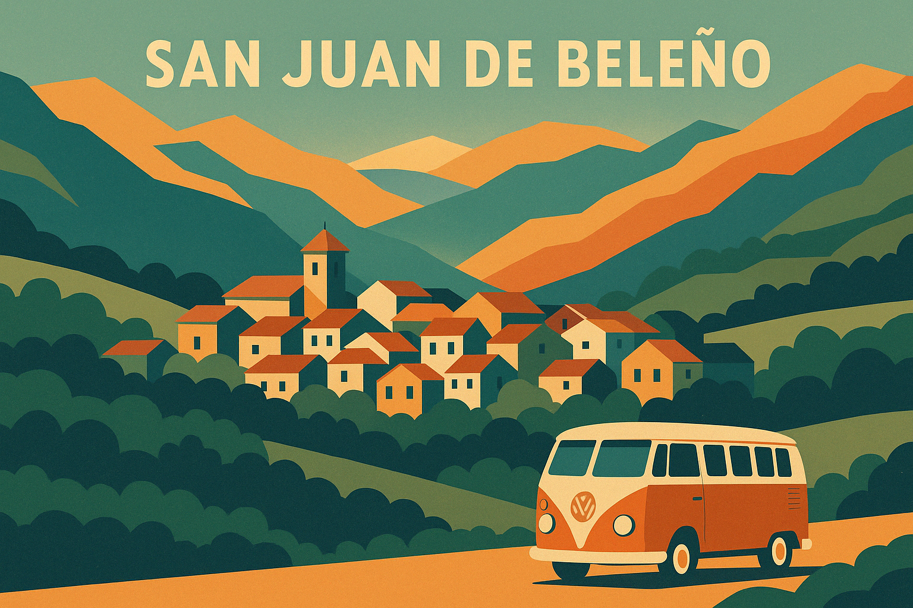
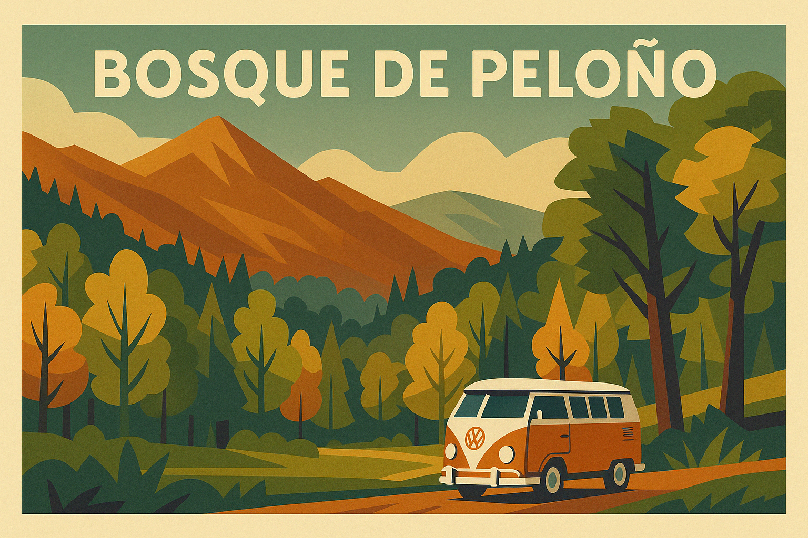
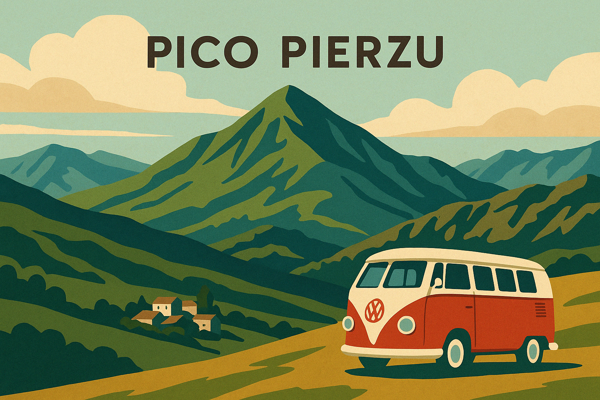

Día 1: San Juan de Beleño
Encantador pueblo asturiano y capital del concejo de Ponga. Perfecto para comenzar la ruta por su tranquilidad y entorno natural.
Sugerencias para el día:
- Visitar el mirador de Les Bedules para una vista panorámica del valle de Ponga.
- Explorar a pie el casco antiguo del pueblo y su iglesia parroquial.
- Tomar un café en un bar local y conversar con los lugareños sobre rutas y tradiciones.
Aparcamiento para furgoneta: Park4Night San Juan de Beleño
Día 2: Bosque de Peloño
Uno de los hayedos más extensos de la península ibérica. Ideal para rutas de senderismo entre árboles centenarios.
Sugerencias para el día:
- Realizar un paseo circular por la pista forestal hasta el collado Granceno.
- Observar aves o simplemente disfrutar del silencio del bosque.
- Preparar comida al aire libre en una de las zonas recreativas cercanas.
Aparcamiento para furgoneta: Park4Night Bosque Peloño
Día 3: Collada Llomena & Pico Pierzu
Desde esta collada parte la ruta al majestuoso Pico Pierzu, con vistas impresionantes de los Picos de Europa.
Plan para el día:
- Ascenso al Pico Pierzu (1.552 m) desde la Collada Llomena.
- Ruta de dificultad moderada, bien señalizada y muy panorámica.
- Disfrutar del picnic en la cima o en el área recreativa.
Aparcamiento para furgoneta: Park4Night Collada Llomena
Ruta a Pico Pierzu: Ver en Wikiloc